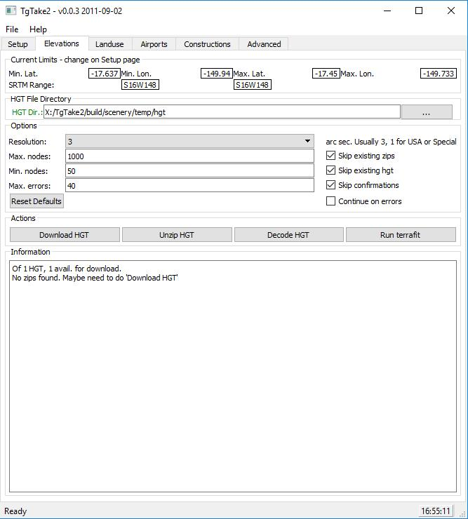

Setup Screen

Here we setup some basic runtime folders - the project folder, where all will be written - must exist, dir of TG Tools, FG Root, HGT Root, and choose the location, here as -17.637, -194.94 to -17.45, -149.733, that is centered on -17.5436, -149.6365, width 0.207, height 0.187. This then establishes the HGT, S16W148, 1x1 block, begins to estimate what will be needed.
Elevations - HGT/DEM
Get the elevations of the area of interest. Download HGT, unzip, decode the hgt, run terrafit... 3sec worldwide available SRTM3, but better is available...